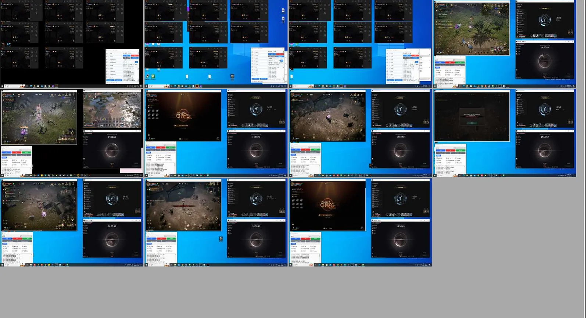

원격PC 임대 가이드 · 나노원격임대
원격PC 임대란? 가격·이용 방법 총정리
원격PC 임대(원격임대, 원격PC 대여, 임대피씨라고도 부릅니다)는 24시간 켜져 있는 PC를 월 단위로 빌려, 내 PC·노트북·스마트폰·태블릿에서 인터넷으로 접속해 쓰는 서비스입니다. 게임과 프로그램은 빌린 PC에서 실행되고 내 기기는 화면을 받아 조작만 하므로, 내 기기의 사양·배터리·발열과 상관없이 쓸 수 있습니다.
이 페이지는 나노원격임대의 옵션별 가격(월 35,000원~45,000원, 3개월 결제 시 90,000원~120,000원), 이용 절차, 접속 방법, 주의사항을 한곳에 정리한 안내입니다. 처음 빌려 보시는 분이 신청 전에 알아 두면 좋은 내용 위주로 썼습니다.
월 35,000원부터3개월 90,000원부터24시간 접속 유지
원격PC 임대 가이드 한눈에 보기
| 서비스 | 게임용 원격PC 월 단위 임대 (원격임대 · 원격PC 대여 · 임대피씨) |
|---|---|
| PC 방식 | PC 한 대를 혼자 쓰는 실제 PC · 게임에 맞춰 최적화 세팅 |
| 가동 | 24시간 365일 켜져 있음 — 원할 때 바로 접속 |
| 접속 기기 | PC · 노트북 · 스마트폰 · 태블릿 |
| 접속 프로그램 | AnyDesk · 크롬 원격 데스크톱 · 파섹(Parsec) · 리모트T |
| 요금 | 월 35,000원~45,000원 · 3개월 결제 시 90,000원~120,000원 (전기요금은 이용료에 포함) |
| 옵션 | 라이젠 4350G · 라이젠 2600(외장 그래픽) · 라이젠 5600GT · 라이젠 5700G(RAM 32GB) |
| 상담·결제 | 카카오톡으로 용도 상담 후 결제 |
| 재고 | 홈페이지 '임대 옵션'에서 임대 가능 대수를 실시간 확인 |
원격PC 임대 이용 순서 4단계
- 용도 알려주기
카카오톡으로 할 게임이나 작업, 필요한 계정 수를 알려 주세요. - 관리자 추천
용도에 맞는 옵션과 대수를 관리자가 추천해 드립니다. 그래픽을 많이 쓰는 게임은 외장 그래픽 옵션(라이젠 2600)이 맞을 수 있습니다. - 선택·결제
옵션과 이용 기간(월 또는 3개월)을 고르고 결제합니다. - 원격 접속
안내받은 접속 정보로 AnyDesk·크롬 원격 데스크톱·파섹·리모트T 중 편한 프로그램을 켜면 바로 사용할 수 있습니다.
옵션별 가격과 사양
| 항목 | 사양 | 월 요금 | 3개월 결제 |
|---|---|---|---|
| 라이젠 4350G | 4코어 8쓰레드 · RAM 24GB · 내장 Vega 6 | 35,000원 | 90,000원 (월 30,000원) |
| 라이젠 2600 | 6코어 12쓰레드 · RAM 24GB · 외장 그래픽카드 | 40,000원 | 110,000원 (월 36,667원) |
| 라이젠 5600GT | 6코어 12쓰레드 · RAM 24GB · 내장 Vega 7 | 40,000원 | 110,000원 (월 36,667원) |
| 라이젠 5700G | 8코어 16쓰레드 · RAM 32GB · 내장 Vega 8 | 45,000원 | 120,000원 (월 40,000원) |
금액은 홈페이지 '임대 옵션' 기준입니다. 3개월로 결제하면 월 요금을 세 번 낼 때보다 4350G 15,000원, 2600 10,000원, 5600GT 10,000원, 5700G 15,000원 적게 듭니다.
집 PC로 돌릴 때 vs 원격PC
| 집 PC | 나노 원격PC | |
|---|---|---|
| 초기 비용 | 게임용 PC 구매 비용 | 월 이용료만 (월 35,000원부터) |
| 전기요금 | 24시간 켜 두면 직접 부담 | 이용료에 포함 |
| 발열·소음 | 집 안에서 발생 | 없음 (임대 PC는 운영사에 설치) |
| 고장·관리 | 직접 수리·부품 교체 | 운영사가 관리 |
| 외출 중 | 원격 프로그램을 직접 설정해야 함 | 휴대폰·노트북으로 바로 접속 |
| 대수 조절 | PC 추가 구매·처분 | 문의 후 월 단위로 조절 |
이용 시 주의사항핵·외부 자동화 프로그램 같은 불법 프로그램 사용, 도박, 해킹, 저작권 침해, 음란물 유통, 명의 도용 등이 확인되면 즉시 이용이 중단되며 관련 법령에 따라 신고될 수 있습니다. 게임마다 다중 접속과 자동사냥 규정이 다르니 게임사 공식 공지도 꼭 확인해 주세요.
나노원격임대 공식 블로그에서 더 보기
- 원격PC 처음 빌릴 때 홈페이지에서 꼭 확인할 5가지 (나노원격임대 이용 방법) — 신청 전에 홈페이지에서 확인하면 좋은 것들을 순서대로 정리한 글
- 원격PC임대 사양별 요금제 1개월 과 3개월비교 — 한 달씩 낼지 3개월을 한 번에 낼지, 옵션별 금액으로 비교한 글
- 가상임대pc? 원격임대pc? 차이점은뭐죠? — 가상 머신과 실제 PC 임대의 차이, 작업관리자로 확인하는 방법
- 원격임대? 원격임대 장점은?
- 원격제어 프로그램 무료로 뭐 쓰지? 원격임대
- 원격pc 소리 안날때? 스피커 없을때 대처법 가상 오디오 케이블!
- 모니터 없이 원격 접속했더니 화면이 까맣다면? 원격 필수품 더미 플러그
원격PC 임대 자주 묻는 질문
원격PC 임대(원격임대)란 무엇인가요?
24시간 켜져 있는 PC를 월 단위로 빌려, 내 PC·노트북·스마트폰·태블릿에서 인터넷으로 접속해 쓰는 서비스입니다. 게임과 프로그램은 빌린 PC에서 실행되고 내 기기는 화면을 받아 조작만 하므로, 내 기기의 사양·배터리·발열과 관계없이 이용할 수 있습니다. 원격임대, 원격PC 임대, 원격PC 대여, 임대피씨는 모두 같은 서비스를 부르는 말입니다.
가상임대PC와 원격임대PC는 같은 건가요?
비슷해 보여도 방식이 다를 수 있습니다. 가상임대PC는 서버 한 대를 여러 개의 가상 머신으로 나눠 빌려주는 방식이라 CPU·메모리·디스크를 다른 이용자와 나눠 쓰고, 그만큼 가격이 낮은 편입니다. 나노원격임대는 PC 한 대를 혼자 쓰시도록 빌려주는 실제 PC 방식이며 게임에 맞춰 최적화 세팅을 해 24시간 운영합니다. 구분하는 방법은 공식 블로그 글에서 정리했습니다.
비용은 얼마인가요?
월 35,000원(라이젠 4350G), 40,000원(라이젠 2600, 외장 그래픽), 40,000원(라이젠 5600GT), 45,000원(라이젠 5700G, RAM 32GB)입니다. 3개월 결제 시에는 각각 90,000원, 110,000원, 110,000원, 120,000원이며, 전기요금은 이용료에 포함돼 있습니다.
3개월 결제와 월 결제 중 어느 쪽이 나은가요?
3개월로 결제하면 월 요금을 세 번 낼 때보다 4350G 15,000원, 2600 10,000원, 5600GT 10,000원, 5700G 15,000원 저렴합니다. 몇 달째 매일 켜 두는 게임이 있다면 3개월 결제가 맞고, 새 게임을 먼저 써 보는 중이거나 사양이 맞는지 모르겠다면 한 달 먼저 써 보고 바꾸는 쪽이 안전합니다.
이용 절차는 어떻게 되나요?
① 카카오톡으로 할 게임과 계정 수를 알려 주시면 ② 관리자가 용도에 맞는 옵션과 대수를 추천하고, ③ 옵션과 이용 기간을 선택해 결제하면 ④ 안내받은 접속 정보로 바로 원격 접속해 사용할 수 있습니다.
어떤 프로그램과 기기로 접속하나요?
AnyDesk, 크롬 원격 데스크톱, 파섹(Parsec), 리모트T 중 편한 프로그램으로 접속하며, PC·노트북·스마트폰·태블릿 모두 지원합니다. 화면이 까맣게 나오거나 소리가 안 나올 때의 해결법은 공식 블로그에 정리돼 있습니다.
지금 바로 빌릴 수 있나요?
홈페이지 '임대 옵션'의 '임대 가능 대수'에서 실시간으로 확인할 수 있고, 재고가 모두 나가면 SOLD OUT으로 바뀝니다. 새 게임이 나오거나 신규 서버가 열리기 직전에는 재고가 빨리 줄 수 있으니 조금 일찍 확인해 보시는 게 좋습니다.
원격PC 임대가 필요 없는 경우도 있나요?
네, 하루 한두 시간만 집에서 게임하고 PC를 꺼 두신다면 지금 쓰는 컴퓨터로 충분해서 굳이 월 비용을 낼 이유가 없습니다. 원격PC는 PC를 계속 켜 둬야 하거나, 집 PC의 발열·소음이 부담되거나, 외출 중에도 휴대폰으로 확인해야 할 때 값을 합니다.
이용 시 주의사항이나 금지 행위가 있나요?
핵·외부 자동화 프로그램 같은 불법 프로그램 사용, 도박, 해킹, 저작권 침해, 음란물 유통, 명의 도용·타인 계정 무단 사용 등이 확인되면 즉시 이용이 중단되며 관련 법령에 따라 신고될 수 있습니다. 게임은 각 게임사의 운영 정책과 약관을 지켜 이용해 주세요.
게임별 이용 안내는 어디서 보나요?
홈페이지 상단 '게임' 메뉴에서 게임을 고르면 그 게임 전용 안내 페이지로 이동합니다. 게임별 추천 옵션과 공식 사양, 자동사냥·다중 접속 정책을 정리해 두었고, 목록에 없는 게임도 카카오톡으로 문의하시면 가능한지 알려 드립니다. 게임별 추천 사양 보기 →